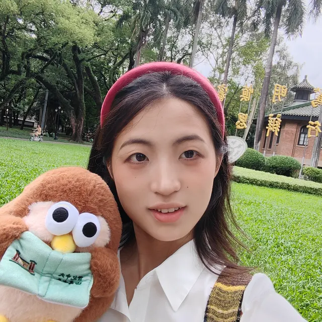
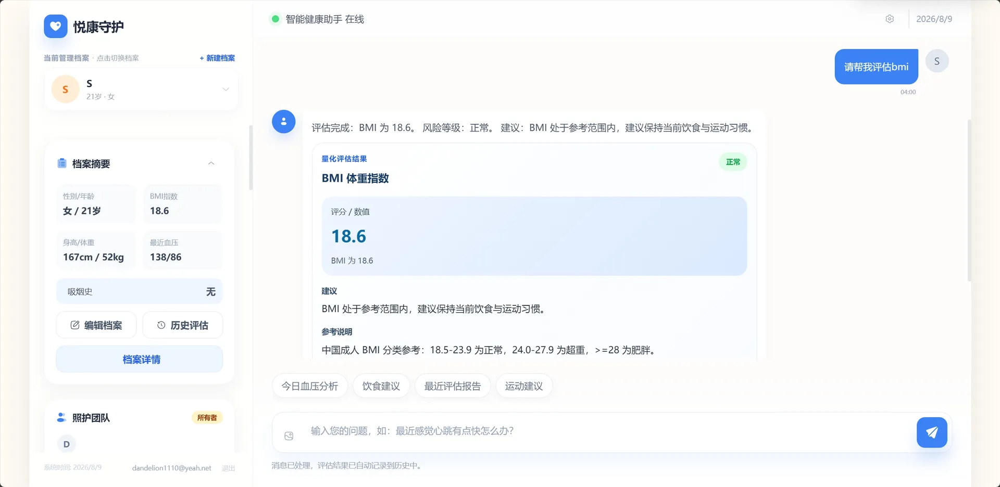
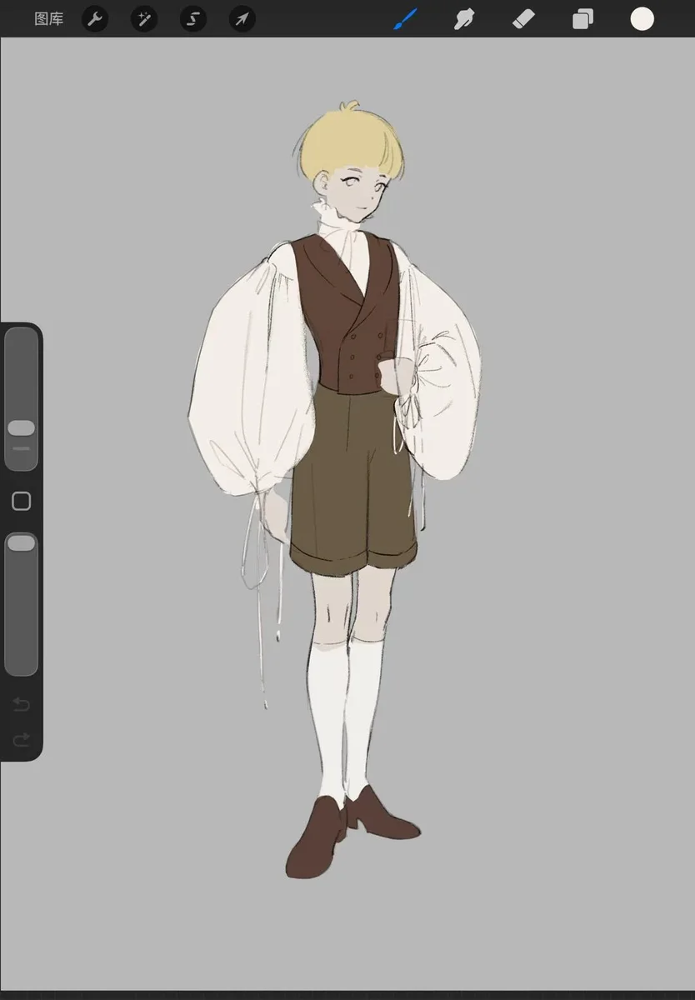
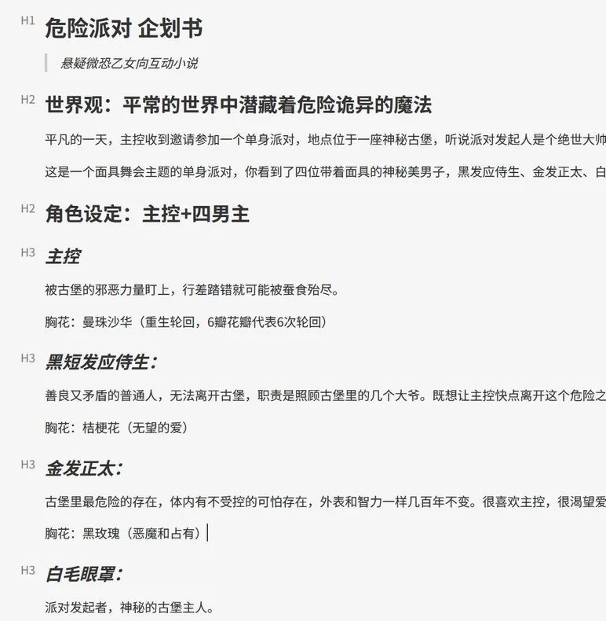
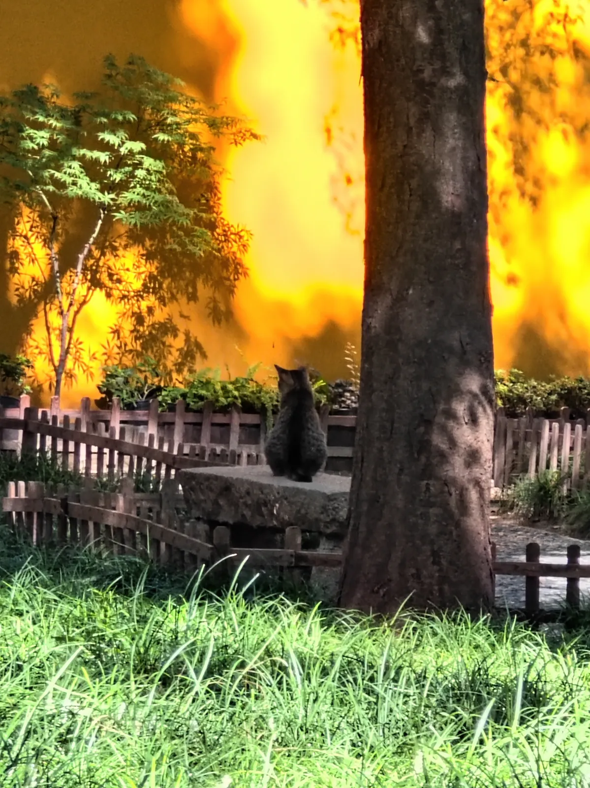

01CS
代码是我的母语。四年,我用它搭了很多小世界。

学生 / 产品人 / 生活体验者985本科 CS BME
向右看,走近我
代码是我的母语。四年,我用它搭了很多小世界。
AI 的潮水漫上来,纯软件在退潮。我转身,申请了生物医学工程 —— 我要给代码装上会呼吸的手脚。
我把小红书上的碎片,建成了库。1087 条笔记,接入 RAG —— 现在它能回答我的问题。
下面这段,是我的第二大脑在工作。
推上线的那天,我会写在这里。
居家康养场景,内嵌 50 个医疗计算器,支持自然语言对话完成健康风险评估。
CS × BME 的第一件作品。

微恐 × 乙女 × 文字。世界观在纸上,角色已经见面了。
它还没有名字。


编程的门槛正在被 AI 抹平,用户第一眼留不留下,看的是审美。
